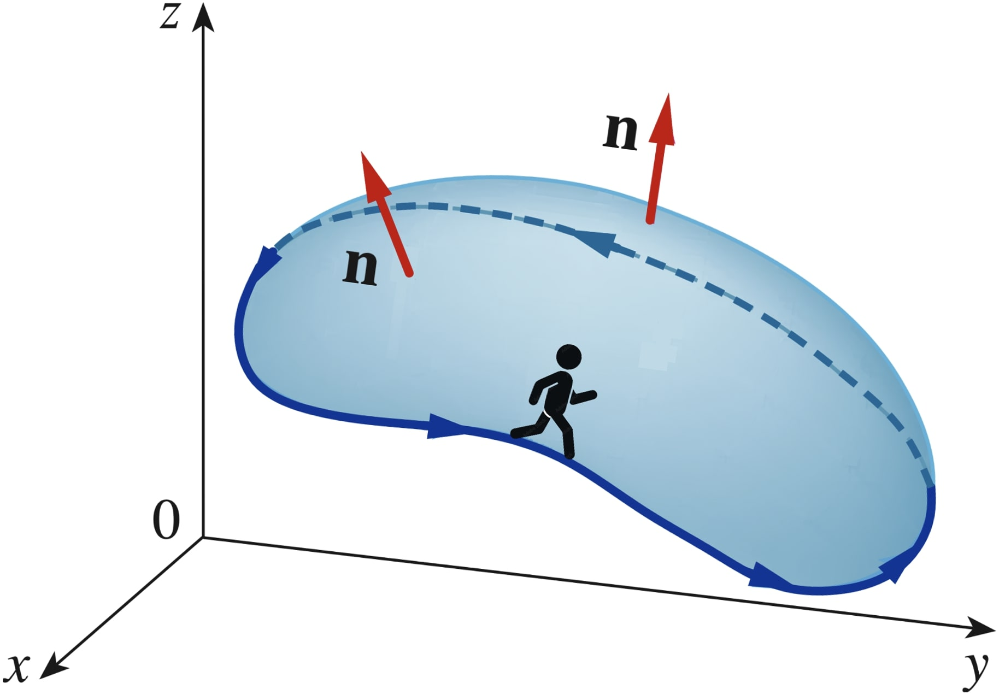

Calculus &
Linear Algebra II
Chapter 46
46 Stokes' theorem
By the end of this section, you should be able to answer the following questions:
- What is Stokes' theorem and under what conditions can it be applied?
- How do you apply Stokes' theorem?
- What is the circulation of a vector field?
46.1 Summary of surfaces and curves
Here we summarise the different types of curves and surfaces which we need to understand Stokes' theorem. Although most of these definitions have already been given, you may find it useful to have all of this information in one place so you can review at a glance.
46.1.1 Surfaces
- Smooth: the surface normal vector depends continuously on the points on the surface.
- Piecewise smooth: the surface consists of finitely many smooth surfaces intersecting only at their boundaries.
- Oriented (or orientable): the direction of the positive normal vector can be continued uniquely and continuously across the whole surface (especially if the surface is piecewise smooth).
46.1.2 Curves
- Smooth: the tangent at each point on the curve is unique and varies continuously.
- Piecewise smooth: the curve consists of finitely many smooth curves.
- Simple: the curve never intersects itself anywhere between its endpoints.
46.2 Stokes' theorem
Let $S$ be a piecewise smooth, orientable surface in $\R^3$ and let the boundary of $S$ be a piecewise smooth, simple, closed curve $C$. Let $\F (x, y, z)$ be a continuous vector function with continuous first partial derivatives in some domain containing $S$. Then \[ \oint_C \F \pd d\r = \iint_S \left(\curl \F \right) \pd \n ~dS \] where $\n$ is a unit normal vector fo $S$, and the integration around $C$ is taken in the direction using the "right hand rule" with $\n$.
46.2 Stokes' theorem
|
Let $S$ be a piecewise smooth, orientable surface in $\R^3$ and let the boundary of $S$ be a piecewise smooth, simple, closed curve $C$. Let $\F (x, y, z)$ be a continuous vector function with continuous first partial derivatives in some domain containing $S$. Then \[ \oint_C \F \pd d\r = \iint_S \left(\curl \F \right)\pd \n ~dS \] where $\n$ is a unit normal vector fo $S$, and the integration around $C$ is taken in the direction using the "right hand rule" with $\n$. |
 |
46.2 Stokes' theorem
46.2.1 Relation to Green's theorem
Recall Green's theorem in the plane. It relates a line integral on a boundary to a double integral over a region in the plane. Roughly speaking, Stokes' theorem is a 3-D version of this: it relates a surface integral on a piece of surface (in 3-D) to a line integral on the boundary of the surface.
In fact, note that if the surface is in the $x$-$y$ plane with $\n = \k$, Stokes' theorem reduces to Green's theorem, since the $\k$ component of $\curl \F$ is just \[ \frac{\partial F_2}{\partial x} - \frac{\partial F_1}{\partial y}. \]
46.2.1 Relation to Green's theorem
In fact, note that if the surface is in the $x$-$y$ plane with $\n = \k$, Stokes' theorem reduces to Green's theorem, since the $\k$ component of $\curl \F$ is just \[ \frac{\partial F_2}{\partial x} - \frac{\partial F_1}{\partial y}. \]
$\displaystyle \oint_{C} \F \pd d\r = \iint_{S}\left(\curl \F \right) \pd \n ~dS$
$\displaystyle \oint_{C} \F \pd d\r = \iint_{D} \left(\curl \F \right) \pd \k ~dA $
$\displaystyle \oint_{C} \F \pd d\r = \iint_{D} \left( \left(\dfrac{\partial F_3}{\partial y} - \dfrac{\partial F_2}{\partial z} \right)\i+ \left(\dfrac{\partial F_1}{\partial z} - \dfrac{\partial F_3}{\partial x} \right)\j+ \left(\dfrac{\partial F_2}{\partial x} - \dfrac{\partial F_1}{\partial y} \right)\k \right) \pd \k ~dA$
$\displaystyle \oint_{C} \F \pd d\r = \iint_{D} \left( \left(0 - \dfrac{\partial F_2}{\partial z} \right)\i+ \left(\dfrac{\partial F_1}{\partial z} - 0 \right)\j+ \left(\dfrac{\partial F_2}{\partial x} - \dfrac{\partial F_1}{\partial y} \right)\k \right) \pd \k ~dA $
$\displaystyle \oint_{C} \F \pd d\r = \iint_{D} \left( \left(0 - 0 \right)\i+ \left(0 - 0 \right)\j+ \left(\dfrac{\partial F_2}{\partial x} - \dfrac{\partial F_1}{\partial y} \right)\k \right) \pd \k ~dA $
$\displaystyle \oint_{C} \F \pd d\r = \iint_{D} \left(\frac{\partial F_2}{\partial x} - \frac{\partial F_1}{\partial y} \right)\k \pd \k ~dA $
$\displaystyle \oint_{C} \F \pd d\r = \iint_{D}\left(\frac{\partial F_2}{\partial x} - \frac{\partial F_1}{\partial y} \right) dA $
since $\,\F(x,y) = F_1(x,y)\,\i + F_2(x,y)\,\j + 0 \,\k$
since $\,\F(x,y) = F_1(x,y)\,\i + F_2(x,y)\,\j + 0 \,\k$
since $\, \k \pd \k =1$
46.2.1 Relation to Green's theorem
$\displaystyle \oint_{C} \F \pd d\r = \iint_{D}\left(\frac{\partial F_2}{\partial x} - \frac{\partial F_1}{\partial y} \right) dA$
46.2.2 Verify Stokes' theorem where $C$
is the curve of intersection of the plane $y+z = 2$ and the cylinder $x^2+y^2 = 1,$ oriented counterclockwise when looking from above, and $\F = \left[-y^2, x, z^2\right]$
46.2.2 Verify Stokes' theorem where $C$ is the curve of intersection of the plane $y+z = 2$ and the cylinder $x^2+y^2 = 1,$ oriented counterclockwise when looking from above, and $\F = \left[-y^2, x, z^2\right]$
46.2.2 Verify Stokes' theorem where $C$
is the curve of intersection of the plane $y+z = 2$ and the cylinder $x^2+y^2 = 1,$ oriented counterclockwise when looking from above, and $\F = \left[-y^2, x, z^2\right]$
Here we must calculate \[ \oint_C \F\pd d\r \;\;\text{ and } \;\;\iint_S \nabla \times \F \pd \n ~dS. \]
Let's find first the parametrisation of $C$, which is defined by the intersection of $\left\{x^2+y^2=1, y+z=2\right\}.$
This is given by \[ \r(t) = (1)\cos(t) ~\i + (1)\sin(t) ~\j +(2-(1)\sin (t) )~\k, \] for $0\leq t\leq 2 \pi.$
46.2.2 Verify Stokes' theorem where $C$
is the curve of intersection of the plane $y+z = 2$ and the cylinder $x^2+y^2 = 1,$ oriented counterclockwise when looking from above, and $\F = \left[-y^2, x, z^2\right]$
Thus we have that \[ d\r(t) = \left( -\sin(t)~\i + \cos (t) ~\j - \cos(t)~\k \right)dt \]
and since $\r(t) = \cos(t) ~\i + \sin(t) ~\j +\left(2-(1)\sin (t) \right)\k$, we have that \[ \F\left(\r(t)\right) = -\sin^2(t)~\i + \cos(t)~\j +\left(2-\sin(t)\right)^2\k. \]
So \[ \begin{multline} \F\left(\r(t)\right) \pd d\r = \left( \sin^3(t) + \cos^2(t) - 4\cos(t)\right. \\ \left.+\,4 \cos(t)\sin (t)-\cos(t) \sin^2(t) \right)dt. \qquad\qquad \end{multline} \]
46.2.2 Verify Stokes' theorem where $C$
is the curve of intersection of the plane $y+z = 2$ and the cylinder $x^2+y^2 = 1,$ oriented counterclockwise when looking from above, and $\F = \left[-y^2, x, z^2\right]$
| $\displaystyle \oint_C \F \pd d\r$ | $\displaystyle = \int_0^{2\pi} \F\left(\r(t)\right) \pd d\r $ |
| $\displaystyle = \int_{t=0}^{t=2\pi} \left( \sin^3(t) + \cos^2(t) - 4\cos(t) \right. $ | |
| $\displaystyle \qquad \qquad \;\;\left. +\;4 \cos(t)\sin (t)-\cos(t) \sin^2(t) \right)dt$ | |
| $\displaystyle = \Large \pi.$ |
46.2.2 Verify Stokes' theorem where $C$
is the curve of intersection of the plane $y+z = 2$ and the cylinder $x^2+y^2 = 1,$ oriented counterclockwise when looking from above, and $\F = \left[-y^2, x, z^2\right]$
Now let's compute $\displaystyle \iint_S\nabla \times \F \pd \n ~dS$. First, we have that
| $\displaystyle \nabla \times \F$ | $\displaystyle =\; \left| \begin{array}{ccc} \i & \j & \k \\ \dfrac{\partial}{\partial x} & \dfrac{\partial}{\partial y}& \dfrac{\partial}{\partial z}\\ -y^2 & x & z^2 \end{array} \right| $ |
| $\displaystyle = \;(0)~\i $ $ -(0)~\j $ $ + (1+2y)~\k$ | |
| $\displaystyle =\;(1+2y)~\k.$ |
46.2.2 Verify Stokes' theorem where $C$
is the curve of intersection of the plane $y+z = 2$ and the cylinder $x^2+y^2 = 1,$ oriented counterclockwise when looking from above, and $\F = \left[-y^2, x, z^2\right]$
We also need the normal vector $ \n$. To find it consider the parametrisation of the surface $S$ as \[ \r(x,y)= x~\i+y~\j+(2-y)~\k, \quad x^2+y^2\leq 1. \] Then
| $\displaystyle \r_x \times \r_y$ | $\displaystyle =\; \left| \begin{array}{ccc} \i & \j & \k \\ 1 & 0& 0\\ 0 & 1 & -1 \end{array} \right| $ $ = \j+\k.$ |
46.2.2 Verify Stokes' theorem where $C$
is the curve of intersection of the plane $y+z = 2$ and the cylinder $x^2+y^2 = 1,$ oriented counterclockwise when looking from above, and $\F = \left[-y^2, x, z^2\right]$
Since $\nabla \times \F = (1-2y)~\k\;$ and $\;\n = \r_x\times \r_y = \j+\k,$ then
| $\displaystyle \iint_S\nabla \times \F \pd \n ~dS$ | $\displaystyle =\iint_D \nabla \times \F \pd (\r_x\times\r_y)~dx~dy$ |
| $=\displaystyle\iint_D (1+2y)~dx~dy$ |
Using polar coordinates $D=\left\{(r,\theta)~|~ 0\leq r \leq 1, 0\leq \theta \leq 2 \pi\right\},$ we get
$\displaystyle\iint_S\nabla \times \F \pd \n ~dS = \int_{0}^{2\pi} \int_0^1 \left(1+2r\sin \theta\right) r~dr~d\theta$ $=\Large \pi.$
46.2.2 Verify Stokes' theorem where $C$
is the curve of intersection of the plane $y+z = 2$ and the cylinder $x^2+y^2 = 1,$ oriented counterclockwise when looking from above, and $\F = \left[-y^2, x, z^2\right]$
Therefore
$\displaystyle \oint_C \F \pd d\r $ $\displaystyle \;= \iint_S\nabla \times \F \pd \n ~dS $ $\,=\Large \pi.$
😎
46.3 Further reading: Circulation
Let $\v$ represent the velocity field of a fluid and $C$ is a piecewise smooth, simple, closed curve. We have \[ \oint_C \v\pd d\r = \oint_C \v \pd \T ~dS, \] where $\T$ is a unit tangent vector in the direction of the orientation of the curve. The dot product $\v \pd \T$ is the component of $\v$ in the direction of $\T$ (and hence the curve), so we can interpret $\oint_C \v \pd \T~dS$ as a measure of the tendency of the fluid to move around $C$ the curve $C$. We call this quantity the circulation of $\v$ around $C$.
46.3 Further reading: Circulation
Now define a small circle $C_a$ of radius $a$ about a point $P_0$, such that the disc $S_a$ enclosed by $C_a$ is normal to the vector $\n(P_0)$. Our aim here is to better understand $\curl \v$.
Since $\curl \v$ is continuous, we approximate $\curl \v$ over $S_a$ as $\curl \v(P_0)$. Stokes theorem then gives us
| $\displaystyle \oint_{C_a} \v \pd d\r$ | $ \displaystyle =\iint_{S_a} \curl \v \pd \n ~dS $ |
46.3 Further reading: Circulation
| $\displaystyle \oint_{C_a} \v \pd d\r$ | $ \displaystyle =\iint_{S_a} \curl \v \pd \n ~dS $ |
| $ \displaystyle \approx \iint_{S_a} \curl \v(P_0) \pd \n(P_0) ~dS $ | |
| $ \displaystyle = \curl \v(P_0) \pd \n(P_0) \iint_{S_a}~dS $ | |
| $ \displaystyle = \curl \v(P_0) \pd \n(P_0) \left( \pi a^2\right) $ |
46.3 Further reading: Circulation
| $\displaystyle \oint_{C_a} \v \pd d\r$ | $ \displaystyle \approx \curl \v(P_0) \pd \n(P_0) \left( \pi a^2\right) $ |
This implies:
| $\displaystyle \curl \v(P_0) \pd \n(P_0) $ | $ \displaystyle \approx \frac{1}{\pi a^2} \oint_{C_a} \v \pd d\r $ |
| $ \displaystyle \approx \frac{\text{circulation around disc}}{\text{area of disc}}$ |
46.3 Further reading: Circulation
| $\displaystyle \curl \v(P_0) \pd \n(P_0) $ | $ \displaystyle \approx \frac{\text{circulation around disc}}{\text{area of disc}}$ |
This approximation improves as $a\to 0$. Indeed \[ \curl \v(P_0) \pd \n(P_0) = \lim_{a \to 0} \frac{1}{\pi a^2} \oint_{C_a} \v \pd d\r \]
Note that this has a maximum value when $\curl \v(P_0)$ and $\n(P_0)$ have the same direction.
46.3 Further reading: Circulation
This approximation improves as $a\to 0$. Indeed \[ \curl \v(P_0) \pd \n(P_0) = \lim_{a \to 0} \frac{1}{\pi a^2} \oint_{C_a} \v \pd d\r \]
Note that this has a maximum value when $\curl \v(P_0)$ and $\n(P_0)$ have the same direction.
In particular, if we take $\n(P_0)$ to be each of the coordinate unit vectors $\i$, $\j$, $\k$, we have the following: The $\i$, $\j$, $\k$ components of $\curl \v(P_0)$ give the circulation density at $P_0$ in planes normal to each of the $\i$, $\j$, $\k $ respectively. The magnitude of $\curl \v(P_0)$ gives the maximum circulation density about $P_0$ in a plane normal to $\curl \v(P_0)$.
46.4 Further reading:
Curl fields & vector potentials
One immediate consequence is that if there are two different surfaces $S_1$ and $S_2$ satisfying the criteria of Stokes' theorem, both with the same boundary curve $C$, then \[ \iint_{S_1}\curl \F \pd \n_1 ~dS = \oint_C \F \pd d\r = \iint_{S_2}\curl \F \pd \n_1 ~dS . \]
46.4 Further reading:
Curl fields & vector potentials
We have that if $S$ is a closed surface satisfying all of the other criteria of Stokes' theorem, and if we define $C$ to be any closed curve lying on $S$, so that $S_1$ and $S_2$ are two open surfaces whose union makes up $S$ and whose common boundary is $C$, then

|
$ \displaystyle =\iint_{S_1}\curl \F \pd \n_1 ~dS + \iint_{S_2}\curl \F \pd \n_2 ~dS $ |
46.4 Further reading:
Curl fields & vector potentials
|
|
$ \displaystyle =\iint_{S_1}\curl \F \pd \n_1 ~dS + \iint_{S_2}\curl \F \pd \n_2 ~dS $ |
| $ \displaystyle =\oint_{C}\F \pd d\r + \oint_{-C} \F \pd d\r $ | |
| $ \displaystyle =\oint_{C} \F \pd d\r - \oint_{C} \F \pd d\r $ $=0,$ |
since the orientation of $C$ as a boundary to $S_1$ will be in the opposite direction to that of $S_2$.
46.4 Further reading:
Curl fields & vector potentials
Let $\F$ be a vector field satisfying $\F = \curl \mathbf G$ for some vector field $G$. We call $F$ a curl field and $G$ a corresponding vector potential.
The above result says that the net outward flux of a curl field across any closed surface is zero.
46.4 Further reading:
Curl fields & vector potentials
We can verify that $\div(\curl \mathbf G) = 0$ for any vector field $\mathbf G$. Consequently we should not be too surprised by the above result, since Gauss' divergence theorem says that
In fact, it turns out that we have the following test for curl fields:
46.4 Further reading:
Curl fields & vector potentials
In fact, it turns out that we have the following test for curl fields:
Let $\F$ be a vector field whose components and their partial derivatives are continuous. If every closed surface in the domain of $\F$ only encloses points which are also in the domain of $\F$, and if $\div \F = 0$, then there exists some $\mathbf G$ such that $\F = \curl \mathbf G$. That is, $\F$ is a $\curl$ field.